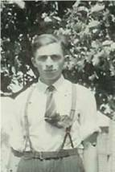
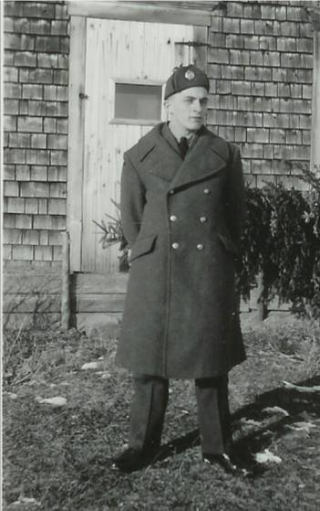
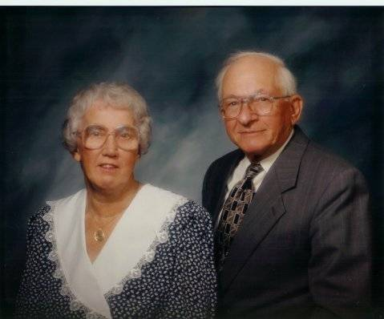

The Family Chronicle
No.113 February 12, 2005
____________________________________________________________________

Ken in front yard
Ken was born on July 25, 1924 and attended the Little Branch School to the end of Grade 8. One year he stayed with Venetia and Cam in Point Aux Carr, went to school, and did the chores while Cam fished smelts. He also attended classes in the Bay du Vin Hall and graduated from MRHS
In October 1939, Ken and I both came down with scarlet fever a week apart. I remember the date because Walter and Agnes came to the house and looked in on us the day they were married – November 1, 1939. I think the quarantine period was 6 weeks - a red warning sign was posted by the front door. We shared the bedroom on the ground floor. Then Ken came down with complications and I was moved to the small bedroom upstairs. That was the time that “Old Jess”, our faithful old horse, was put down.
We always tapped a few maple trees and Mum made maple syrup. I went with Ken with a horse and sled, with cream cans and the barrel from the churn, to collect sap. As I recall, it was early in the morning before we went to school.
Ken has stories to tell about Venetia catching him when he tumbled out of the car on a turn in the Bathurst Road, getting pecked near an eye by a hen, and Wallace MacDonald’s visit to the Little Branch school. . Once on a visit to Bathurst, Ken and I stayed with Aunt Maude
In 1943, Ken enlisted in the RCAF; he phoned Mum from Moncton and, as I recall, Walter, Mum and I saw him at the Newcastle station when the train stopped briefly. His first posting was to Toronto fro basic training then to Galt fro technical training; later postings included St. John’s, Quebec and Scoudouc, New Brunswick. He brought an airman from BC home for Christmas that first Christmas.

In 1946 he married Verne Taylor and they had two children, Keith and Doreen. Ken and I both boarded at the home of Bentley Lewis in Moncton when Ken was taking a carpentry course and I went to summer school in 1948. In 1950 he re-enlisted in the RCAF and postings included Trenton, Calgary, Armstrong, Resolute, Moncton, Greenwood, Ottawa and Chatham.
Ken was a carpenter by trade building homes on Saturdays and evenings wherever he was posted; he built his own home in Napan, Venetia’s home after her fire and a home for his in-laws after their fire. He pitched in to help others building homes, barns, sheds, etc.
Ken and Verne are active members of St. Paul’s Presbyterian Church and Ken has been Clerk of Session for 27 years. For years he picked up Venetia and Edith Bremner every Sunday for church and still takes Edith on a regular basis. He and Verne are active in the senior’s organization and are ardent supporters of church suppers in the Miramichi.
Ken has a great memory and likes to recount jokes and stories of yesteryear. I often check with him on items for this newsletter. He attends in local political meetings. At age 80 he purchased a computer and has learned the intricacies of email, games and the internet. Ken and Verne are regular participants in the Seniors' card games at the Black River Hall and impromptu games either at their home or the home of friends.

Ken and Verne provide me with a home when I visit the Miramichi.
The Chronicle is an occasional newsletter published by Don Glendenning and posted on the family website. It is intended to share information about my family, community and the times in which I grew up. While every effort is made to be accurate, errors are likely to occur. Comments, enquiries and information may be sent to 62 Queen Elizabeth Drive, Charlottetown, PEI, C1A 3A9. Tel:902 892 5859. Email: dglende@auracom.com Web: www.glendenning.net